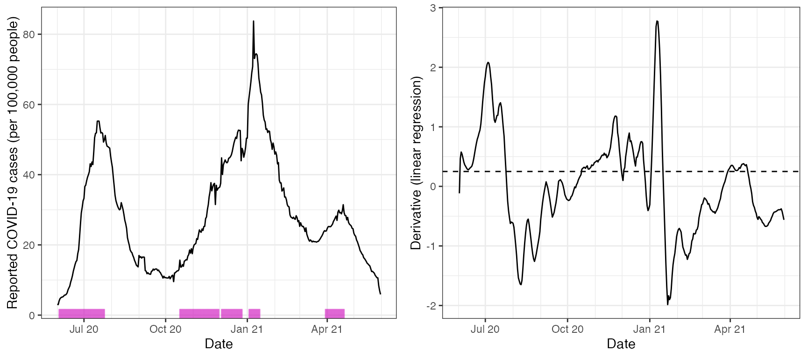
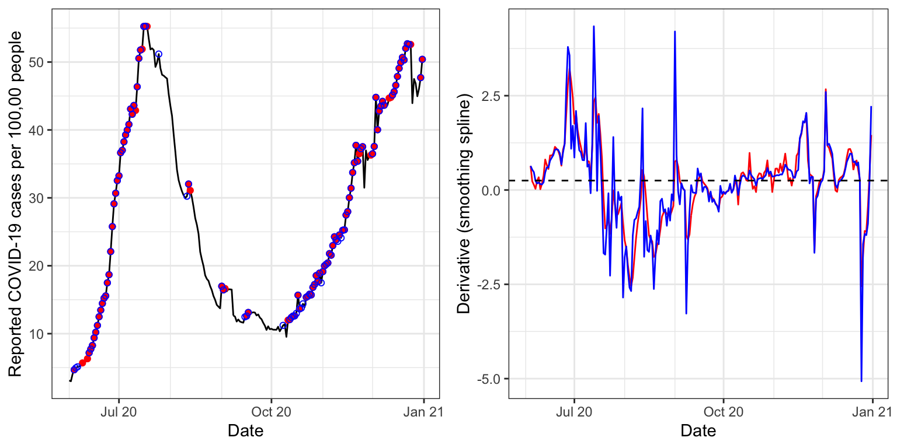
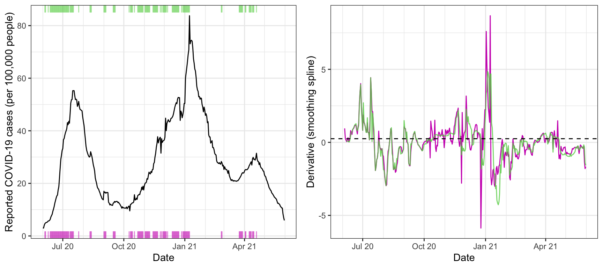

In this vignette, we’ll take a look at estimating derivatives of signals over time, using the estimate_deriv() function. We’ll examine this functionality on state-level daily reported COVID-19 case rates (where by rate we mean a count per 100,000 people), smoothed using a 7-day trailing average.
library(covidcast)
library(epitools)
library(dplyr)
x <- covidcast_signal(data_source = "jhu-csse",
signal = "confirmed_incidence_prop",
start_day = "2020-06-01",
end_day = "2021-05-31",
geo_type = "state",
geo_values = "fl") %>%
as.epi_signal(name = "covid19_cases") %>%
select(value, geo_value, time_value, issue) %>%
slide_by_geo(slide_fun = ~ Mean(.x$value), n = 7, col_name = "value") The function for estimating derivatives is called estimate_deriv(), and (aside from an epi_signal object) takes two primary arguments: method, indicating the method to use for derivative estimation; and n indicating the trailing sample size (number of days) to use in training the given method. Here we use method = "lin", the default, which estimates the derivative using the slope from a simple linear regression, and n = 14, also the default.
x <- estimate_deriv(x, method = "lin", n = 14)
head(x, 10)## # A tibble: 10 × 5
## value geo_value time_value issue deriv
## <dbl> <chr> <date> <date> <dbl>
## 1 3.11 fl 2020-06-01 2020-10-30 NA
## 2 2.99 fl 2020-06-02 2020-10-30 -0.116
## 3 4.04 fl 2020-06-03 2020-10-30 0.466
## 4 4.68 fl 2020-06-04 2020-10-30 0.577
## 5 4.96 fl 2020-06-05 2020-10-30 0.540
## 6 5.12 fl 2020-06-06 2020-10-30 0.475
## 7 5.17 fl 2020-06-07 2020-10-30 0.406
## 8 5.37 fl 2020-06-08 2020-10-30 0.361
## 9 5.69 fl 2020-06-09 2020-10-30 0.336
## 10 5.72 fl 2020-06-10 2020-10-30 0.308We can see that a column deriv has been added to the output data frame, which contains the derivative estimates. Below we visualize these estimates in tandem with the signal itself. The purple ticks on the x-axis mark time points at which the derivative estimate exceeds a threshold (arbitrarily chosen) of 0.25. These seem to roughly but reasonably mark times of upswing in the underlying signal.
library(ggplot2)
library(gridExtra)
theme_set(theme_bw())
threshold = 0.25
p1 <- ggplot(x, aes(x = time_value, y = value)) +
geom_line() +
geom_rug(data = x %>% filter(deriv >= threshold), aes(x = time_value),
sides = "b", color = 6, alpha = 0.5) +
scale_x_date(minor_breaks = "month", date_labels = "%b %y") +
labs(x = "Date", y = "Reported COVID-19 cases (per 100,000 people)")
p2 <- ggplot(x, aes(x = time_value, y = deriv)) +
geom_line() +
geom_hline(yintercept = threshold, linetype = 2) +
scale_x_date(minor_breaks = "month", date_labels = "%b %y") +
labs(x = "Date", y = "Derivative (linear regression)")
grid.arrange(p1, p2, nrow = 1)
Now we consider method = "ss", which uses a smoothing spline for the estimate of the derivative. That is, at each time point, we fit a natural cubic spline to the data from the trailing n days, and return the derivative of the underlying fitted spline at the current time as the estimate. Here we set n = 28, a bit higher sample size, and fit the spline in two ways: first, using a fixed degrees of freedom of 8; and second, using cross-validation to choose the amount of regularization (tuning parameter). This is accomplished by passing additional arguments to estimate_deriv(), which are in turn passed on to the underlying function it uses to fit smoothing splines, stats::smooth.spline(). Note that we also set a custom name for the output column with the estimated derivatives, via the col_name argument.
x <- estimate_deriv(x, method = "ss", n = 28, col_name = "deriv_ss1", df = 8)
x <- estimate_deriv(x, method = "ss", n = 28, col_name = "deriv_ss2", cv = TRUE)
p1 <- ggplot(x, aes(x = time_value, y = value)) +
geom_line() +
geom_rug(data = x %>% filter(deriv_ss1 >= threshold), aes(x = time_value),
sides = "b", color = 6, alpha = 0.5) +
geom_rug(data = x %>% filter(deriv_ss1 >= threshold), aes(x = time_value),
sides = "t", color = 3, alpha = 0.5) +
scale_x_date(minor_breaks = "month", date_labels = "%b %y") +
labs(x = "Date", y = "Reported COVID-19 cases (per 100,000 people)")
p2 <- ggplot(x, aes(x = time_value)) +
geom_line(aes(y = deriv_ss1), color = 6) +
geom_line(aes(y = deriv_ss2), color = 3, alpha = 0.8) +
geom_hline(yintercept = threshold, linetype = 2) +
scale_x_date(minor_breaks = "month", date_labels = "%b %y") +
labs(x = "Date", y = "Derivative (smoothing spline)")
grid.arrange(p1, p2, nrow = 1)
The estimated derivates—in purple for the smoothing spline with 8 degrees of freedom of 8, and in green for the one tuned by cross-validation—appear less smooth than those above, from linear regression. Using cross-validation offers more adaptivity to the time-varying level of smoothness, but this can sometimes result in erratic derivative estimates (big green spikes in the right plot).
Lastly we consider method = tf", which uses trend filtering for estimating the derivative. That is, at each time point, we fit a discrete spline of quadratic order to the data from the trailing n days, and return the discrete derivative of the underlying fitted spline at the current time as the estimate. As before, we fit the spline in two ways: first, using a fixed degrees of freedom of 8; and second, using cross-validation to choose the amount of regularization. Note: the computation here takes a while (it’s based on computing a full solution path for the trend filtering problem, via the genlasso::trendfilter() function), in the latter case.
x <- estimate_deriv(x, method = "tf", n = 28, col_name = "deriv_tf1", df = 8)
x <- estimate_deriv(x, method = "tf", n = 28, col_name = "deriv_tf2", cv = TRUE)
p1 <- ggplot(x, aes(x = time_value, y = value)) +
geom_line() +
geom_rug(data = x %>% filter(deriv_tf1 >= threshold), aes(x = time_value),
sides = "b", color = 6, alpha = 0.5) +
geom_rug(data = x %>% filter(deriv_tf1 >= threshold), aes(x = time_value),
sides = "t", color = 3, alpha = 0.5) +
scale_x_date(minor_breaks = "month", date_labels = "%b %y") +
labs(x = "Date", y = "Reported COVID-19 cases (per 100,000 people)")
p2 <- ggplot(x, aes(x = time_value)) +
geom_line(aes(y = deriv_tf1), color = 6) +
geom_line(aes(y = deriv_tf2), color = 3, alpha = 0.8) +
geom_hline(yintercept = threshold, linetype = 2) +
scale_x_date(minor_breaks = "month", date_labels = "%b %y") +
labs(x = "Date", y = "Derivative (smoothing spline)")
grid.arrange(p1, p2, nrow = 1)
The estimated derivates now appear a bit smoother than the last ones, from the smoothing spline methods. Again, using cross-validation offers a noticeable improvement in adapting to to the time-varying level of smoothness, and also does not appear to be suffering from the same volatility as in the smoothing spline case.
In the call to estimate_deriv(), we can set keep_obj = TRUE to keep around a second column with the fitted model objects. For example, here, we can look at the p-values associated with the estimated slopes from lsfit().
x <- estimate_deriv(x, method = "lin", n = 14, keep_obj = TRUE)
class(x$deriv_obj)## [1] "list"
ls.print(x$deriv_obj[[7]])## Residual Standard Error=0.3456
## R-Square=0.8856
## F-statistic (df=1, 5)=38.6943
## p-value=0.0016
##
## Estimate Std.Err t-value Pr(>|t|)
## Intercept -7478.7870 1202.9753 -6.2169 0.0016
## X 0.4063 0.0653 6.2205 0.0016
x %>%
rowwise() %>%
mutate(p_value = quiet(
tryCatch(ls.print(deriv_obj)$coef.table[[1]][2,"Pr(>|t|)"],
error = function(e) NA))) %>%
select(value, geo_value, time_value, deriv, p_value) %>%
head(10)## # A tibble: 10 × 5
## # Rowwise:
## value geo_value time_value deriv p_value
## <dbl> <chr> <date> <dbl> <dbl>
## 1 3.11 fl 2020-06-01 NA NA
## 2 2.99 fl 2020-06-02 -0.116 NaN
## 3 4.04 fl 2020-06-03 0.466 0.398
## 4 4.68 fl 2020-06-04 0.577 0.0717
## 5 4.96 fl 2020-06-05 0.540 0.0114
## 6 5.12 fl 2020-06-06 0.475 0.00298
## 7 5.17 fl 2020-06-07 0.406 0.00157
## 8 5.37 fl 2020-06-08 0.361 0.000626
## 9 5.69 fl 2020-06-09 0.336 0.000142
## 10 5.72 fl 2020-06-10 0.308 0.0000539